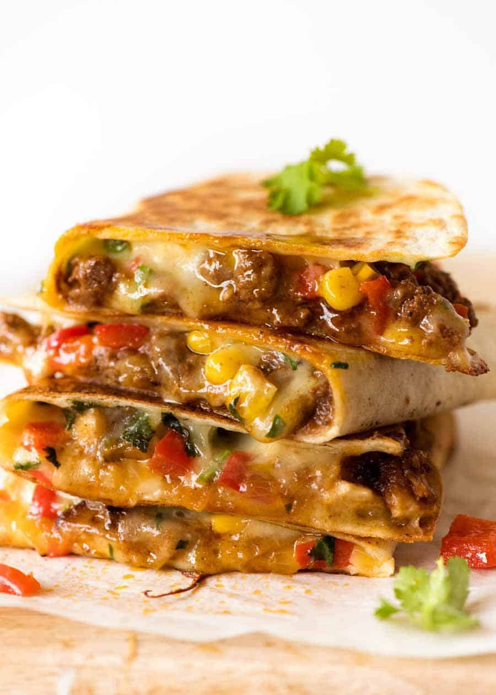

Quesadilla Recipe

Description
Today we're going to teach you how to make a quesadilla, a tex-mex staple and family
favorite! Typically made with salsa, cheese, and a meat option sandwiched between
either two tortillas, or one folded over!
Ingredients
- Large flour tortillas
- Grated cheese
- Olive oil or butter
- Sliced mushrooms
- Chicken pieces
- Kosher salt
Instructions
- Heat the tortillas until air pockets form
- Add the cheese and other ingredients
- Lower the heat and cover pan
- Fold the tortilla over
- Remove quesadilla from pan and cut into wedges